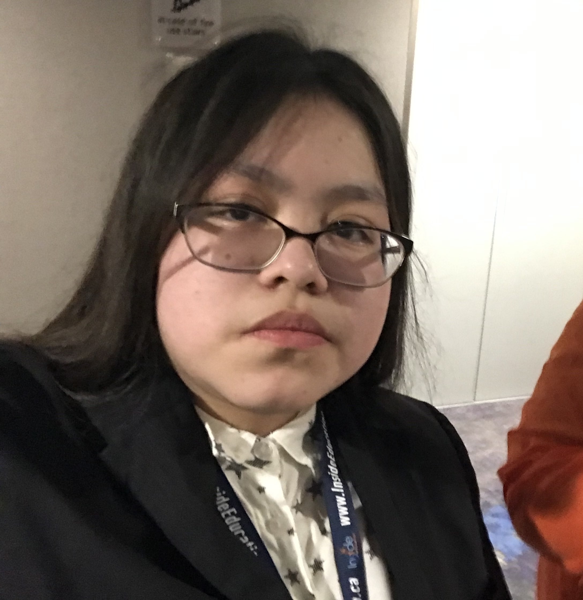
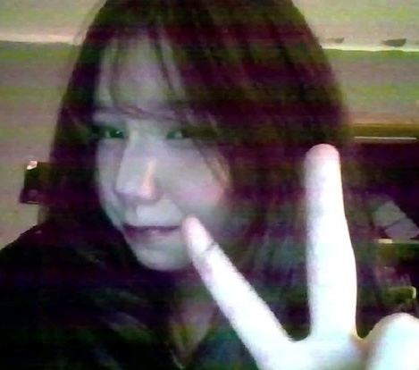
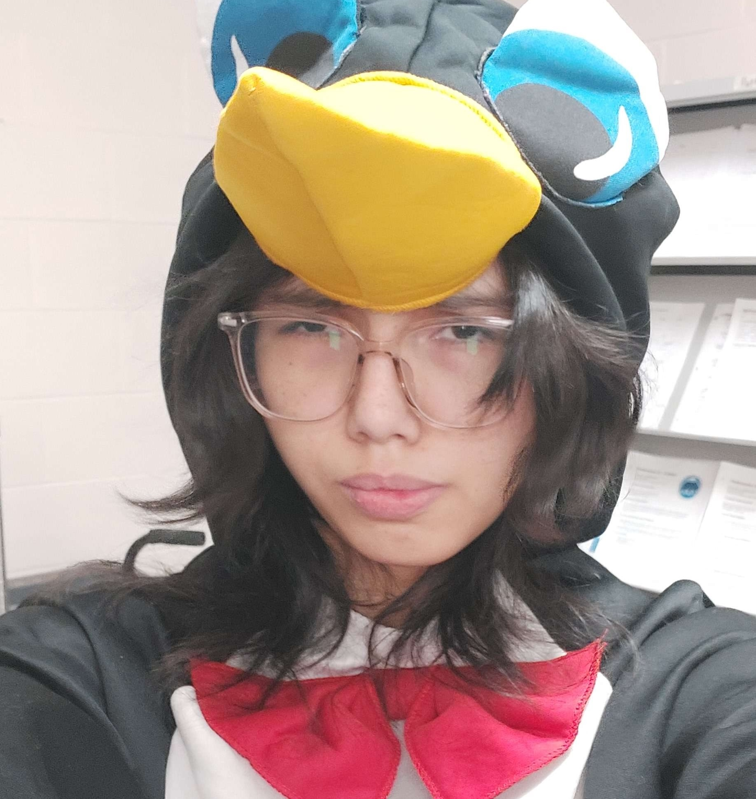

Home
Welcome to Latespring Studios!
A silly little passion project spearheaded by an aspiring Indigenous Actor, and the friends that are dragged into their antics!
Latespring Studios is specifically geared towards silly, short, skits, heavily inspired by the early era of Youtube Web Series
This website serves as a place to keep track of everything we've done so far!

Media
A collection of the media we have created
- Anchel and Kiri
- The Silliest Girl in The World
Future Projects
A sneak peak into what's next!
- More projects to be announced...
Cast & Crew
Meet the cast and crew!

The creator of Latespring Studios, and the evil genius behind everything.
Leans heavily on inspiration from their favourite actors and comedians, everything they do is almost like a love letter to the people they admire.
Writer, director, producer, and co-star of Anchel and Kiri!
Stars as a multitude of characters on Anchel and Kiri, who are definitely not the same person. Also stars as the titular character, Silly Girl, from the other series, The Silliest Girl in The World.

The better half of Anchel and Kiri.
Who also helps with filming.
Stars as a fictionalized version of herself in Anchel and Kiri, usually playing the "straight man" to Kiri's antics.
Also has a few small roles in The Silliest Girl in The World.

The second half of Anchel and Kiri.
Like Angel, also helps with filming.
Stars alongside Anchel in Anchel and Kiri as a fictionalized version of herself who gets into wacky scenarios.
Also co-stars in small roles in The Silliest Girl in The World